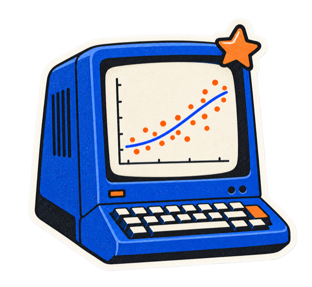
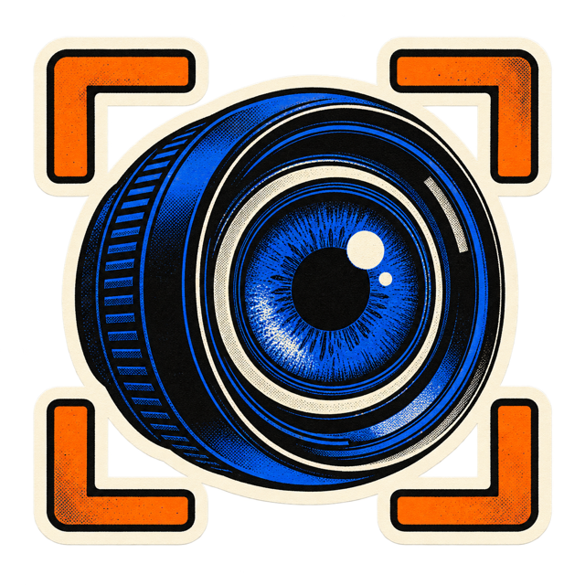

DA | Studio
Студия разработкиDevelopment studio
с сентября 2025since September 2025Python developer / Applied ML
Превращаю данные в работающие сервисы: от прогноза закупок до аналитики видео.I turn data into working products, from purchasing forecasts to video analytics.

Пишу на Python. Работаю с данными, ML и компьютерным зрением. Люблю, когда сложная система выглядит для пользователя просто.I build with Python, data, machine learning and computer vision. I like making complex systems feel straightforward to use.
Программная инженерия
2 курс · очная формаSoftware Engineering
2nd year · full-time
Студия разработкиDevelopment studio
с сентября 2025since September 2025Прямая работа с клиентамиDirect client work
KworkЧетыре коммерческих проекта — от данных на входе до результата для пользователя.Four commercial projects, from input data to a useful result.
Сверка → расхождения → решенияCompare → review → resolve
Сопоставляет учётные и фактические остатки. Показывает расхождения, чтобы их можно было разобрать и сохранить решение.Compares recorded and counted stock. Makes differences visible, ready to review and resolve.
FastAPI · DuckDB · OData
Синтетические данные в демоSynthetic demo data
История → прогноз → заявкаHistory → forecast → order
Прогноз закупок для сети ресторанов «Токио». История продаж превращается в рекомендации по товарам и точкам на несколько дней вперёд.Purchasing forecasts for the Tokio restaurant chain. Sales history becomes product and location recommendations for the coming days.
CatBoost · HGB · pandas
Синтетические данные в демоSynthetic demo data
Видео → треки → подсчётVideo → tracking → counts
Загрузите запись и проведите линию. Сервис посчитает проезды в обе стороны, сохранит размеченное видео и события в CSV.Upload a recording and draw a line. The service counts crossings in both directions, saves annotated video and exports events to CSV.
YOLO · ByteTrack · FastAPI · React
Общее демо для коротких записейShared demo for short recordings

Камера → события → аналитикаCamera → events → analytics
Разделяет проезды через точку обслуживания и по дороге. События сохраняются отдельно: их можно проверять и анализировать по времени.Separates service-point crossings from road bypasses. Events are stored independently for review and analysis over time.
YOLO · ByteTrack · SQLite · Streamlit
Локальный запуск · исходники приватныеLocal deployment · private source
Ассистенты, веб-сервисы и ML-эксперименты. У каждого своя задача и свой способ её решить.Assistants, web services and ML experiments. Each tackles a different problem.
Ассистент с локальной LLM и RAG. Поиск по базе знаний добавляет нужный контекст к вопросу.An assistant with a local LLM and RAG. Knowledge retrieval brings relevant context into each question.
FastAPI · aiogram · Ollama · pgvectorВеб-сервис с авторизацией, бизнес-сценариями и уведомлениями.A web service with authentication, business workflows and notifications.
TypeScript · React · Prisma · DockerУчебные эксперименты с YOLOv8 и подготовкой полигональной разметки COCO. В репозитории — notebook обучения, валидации и инференса, а также инструмент конвертации аннотаций.YOLOv8 experiments and COCO polygon annotation preparation. The repository includes a training, validation and inference notebook, plus an annotation conversion tool.
Python · YOLOv8 · COCOАнтифрод банковских операций: признаки, GroupKFold, LightGBM и CatBoost. Эксперименты с нейросетью и ансамблем моделей.Banking transaction fraud detection: features, GroupKFold, LightGBM and CatBoost, with neural-network and ensemble experiments.
LightGBM · CatBoost · PyTorch · GroupKFoldРекомендации на данных Ozon: популярность, свежесть и сезонность. Корректировка по категориям, исключение просмотренного и подбор top-100.Recommendations on Ozon data: popularity, freshness and seasonality, with category penalties, viewed-item exclusion and top-100 selection.
Python · NumPy · pandas · PyArrow · ParquetГруппировка поисковых запросов с помощью эмбеддингов и HDBSCAN.Grouping search queries with embeddings and HDBSCAN.
sentence-transformers · HDBSCANОт данных и модели до API, интерфейса и запуска.From data and models to APIs, interfaces and deployment.
Python · FastAPI · Flask · REST API · aiogram 3 · Node.js · Express · Prisma
SQL · PostgreSQL · DuckDB · SQLite · pandas · NumPy · SciPy · PyArrow · Parquet · Jupyter
scikit-learn · CatBoost · HGB · XGBoost · LightGBM · PyTorch · Optuna · SHAP
YOLO · Ultralytics · ByteTrack · OpenCV · COCO
sentence-transformers · Embeddings · HDBSCAN · RAG · Ollama · pgvector · YandexGPT
JavaScript · TypeScript · React · Vite · Streamlit · HTML · CSS
PHP · WordPress · WooCommerce · Bitrix · OpenCart · MODX · 1С
Git · pytest · Docker · Linux · nginx · matplotlib · seaborn
Победитель · Информатика и ИКТWinner · Informatics & ICT
4 место4th place
Финалист · АлгоритмыFinalist · Algorithms
ПолуфиналистSemifinalist
Участник · Поиск дублейParticipant · Duplicate detection
4 место (2024) · финалист трека ИИ (2025)4th place (2024) · AI finalist (2025)
Открыт к проектам и позициям
Python-разработчика / ML-инженера.Open to projects and roles
in Python development / ML engineering.